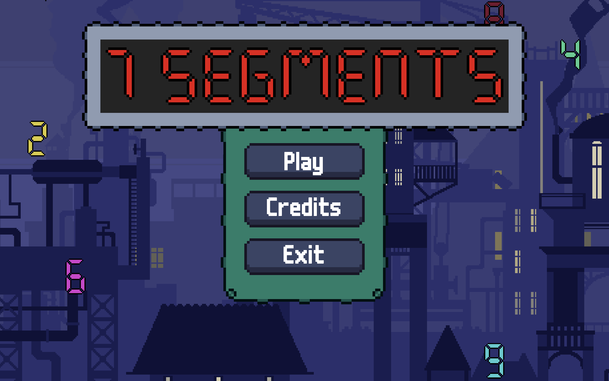
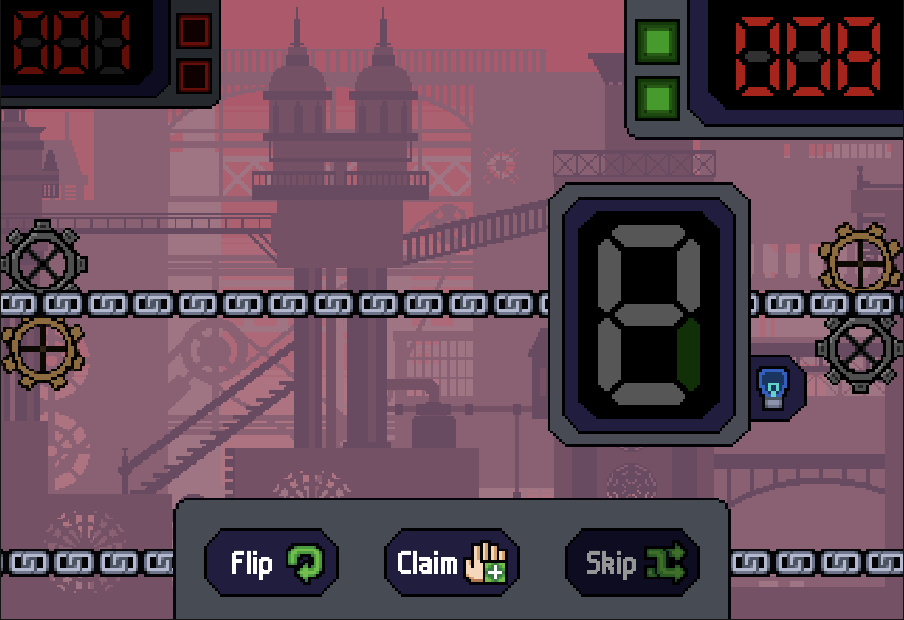
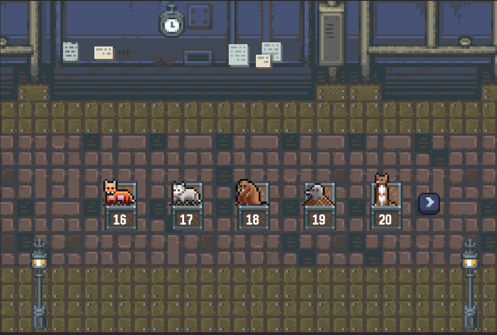
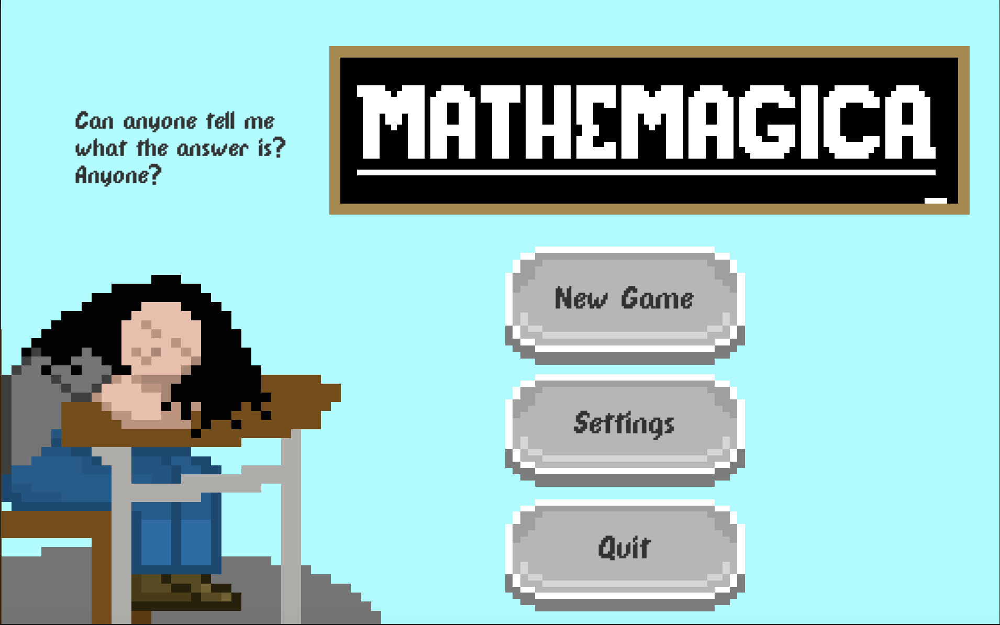
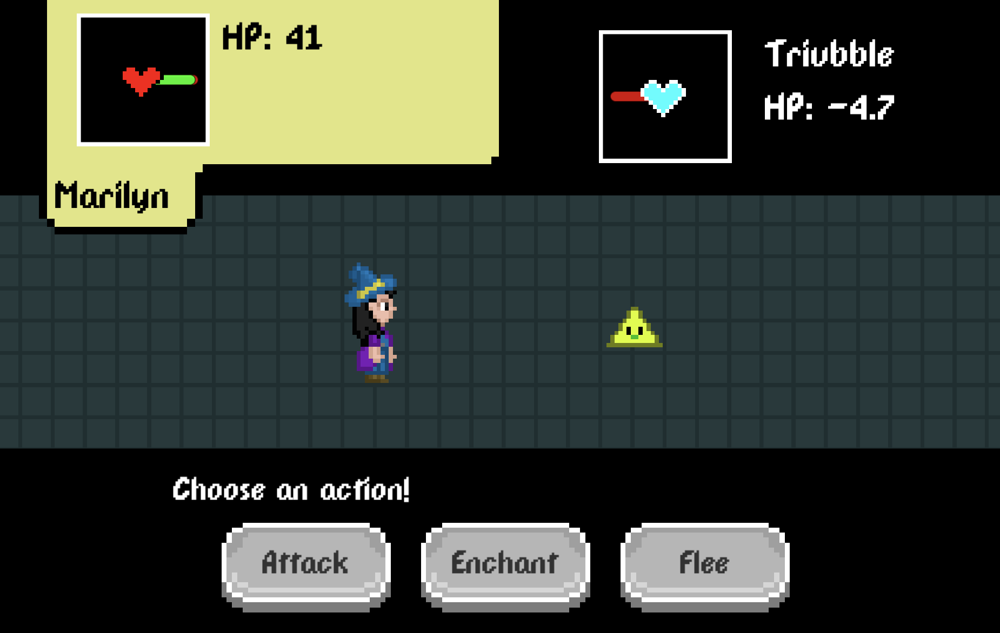
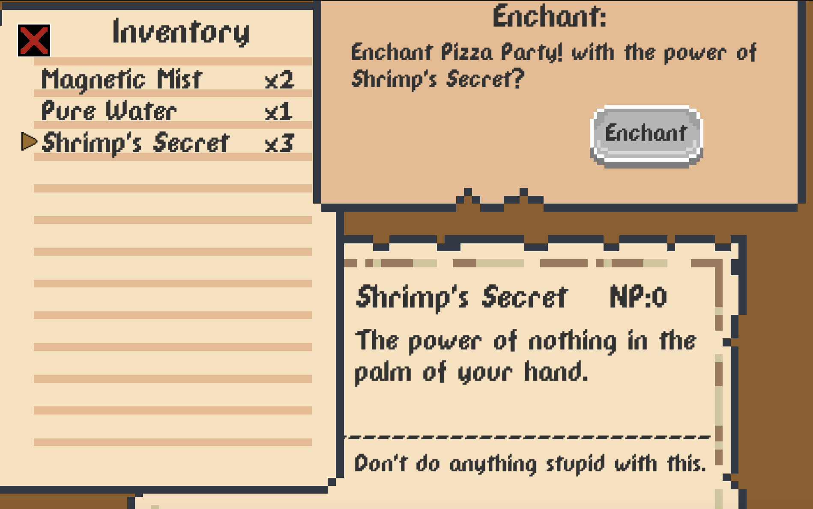
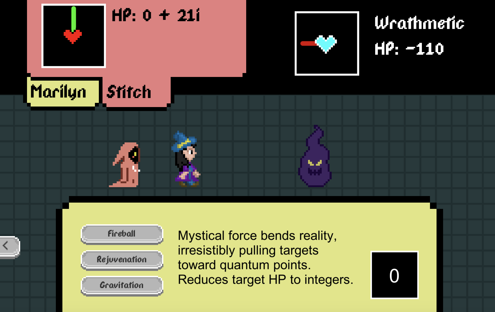
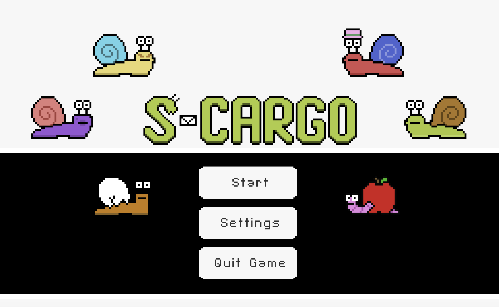
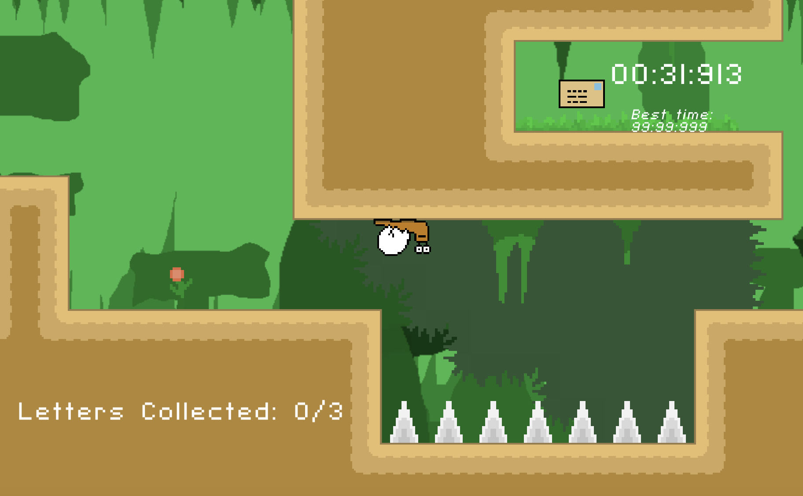
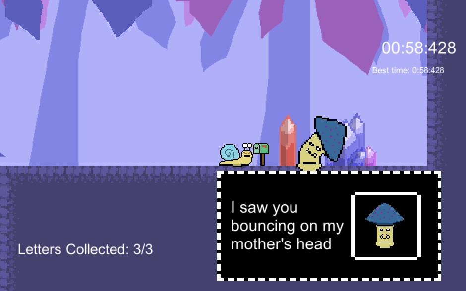

As a game developer, I strive to create experiences that are uniquely my own. Currently, my individual projects all exist within the scope of Unity, C# and 2D pixelart, but I'm always pushing my boundaries and exploring new ways I can create games I feel passionate about. If you'd like to see my games, please open my Itch.io. I am always pleased to hear feedback, positive or negative, from people who have given my projects their time and attention.
Seven Segments is the first officially published game by thatMolamola Games, and it is a puzzle strategy game themed around Seven Segment Displays. With three multiplayer modes and a single player campaign, the core basis of the game centers on illuminating segments in order to claim digits on a Seven Segment Display.
  Mathemagica is a game protoype, similarly math themed as Seven Segments, but with a more narratively driven world. It heavily draws from RPG elements while advancing those elements in new ways, primarily by allowing the player to control their damage output via in-battle spellcrafting, in addition to battles involving imaginary HP values, forcing the player to defeat their opponents by dropping HP values to exactly zero.
   S-Cargo was thatMolamola's first game prototype, a speedrunner platformer game themed around snails delivering mail.
  